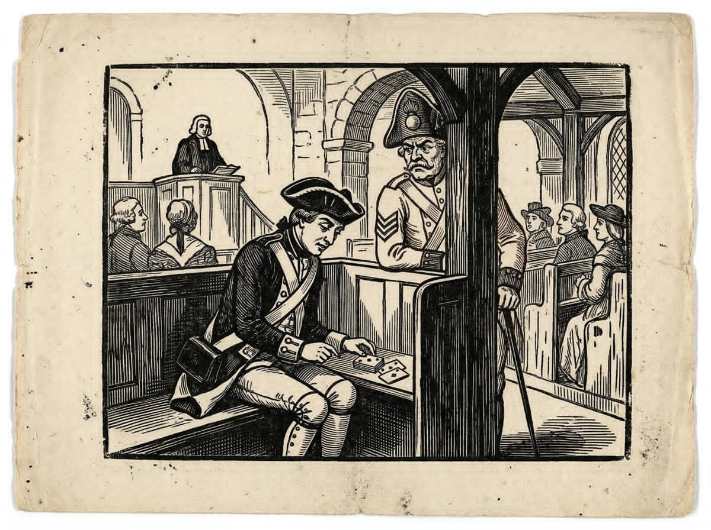
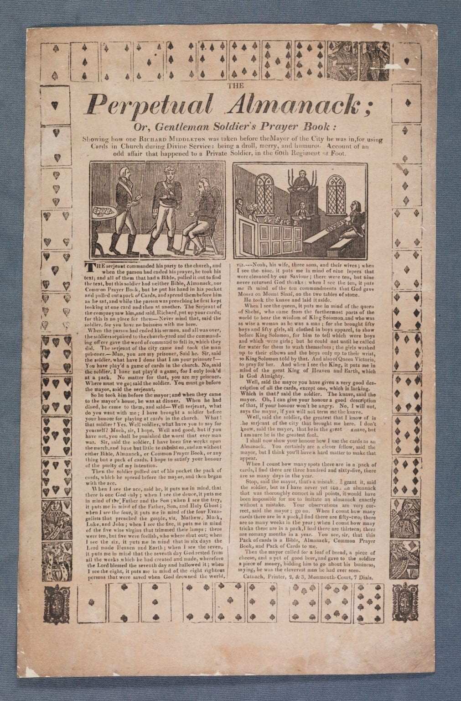
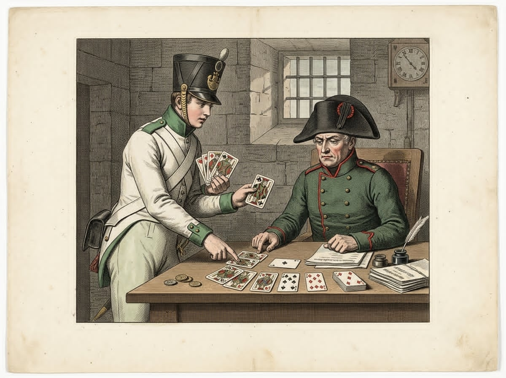
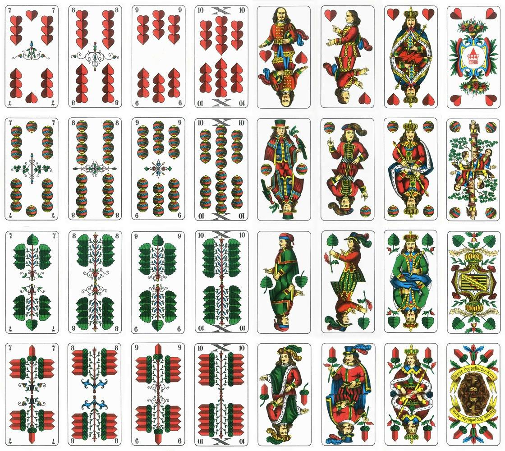
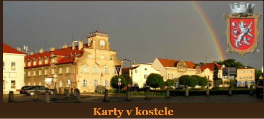
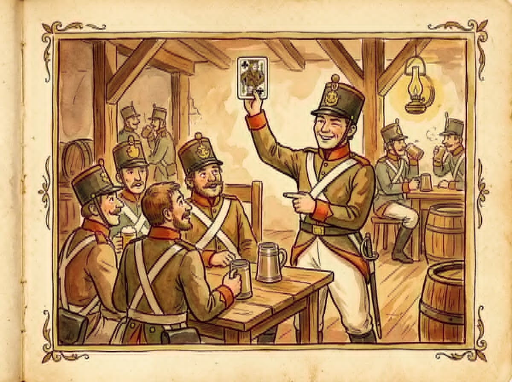
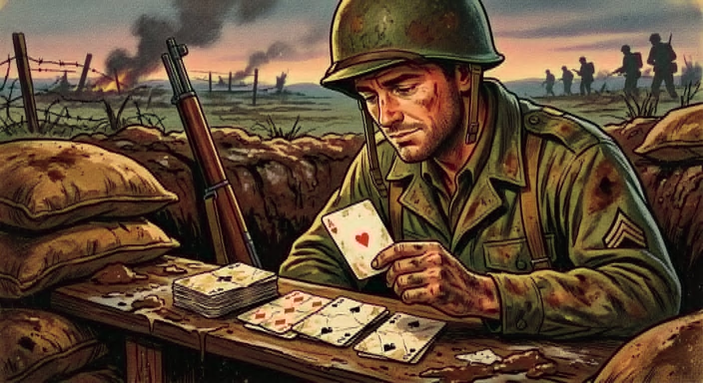
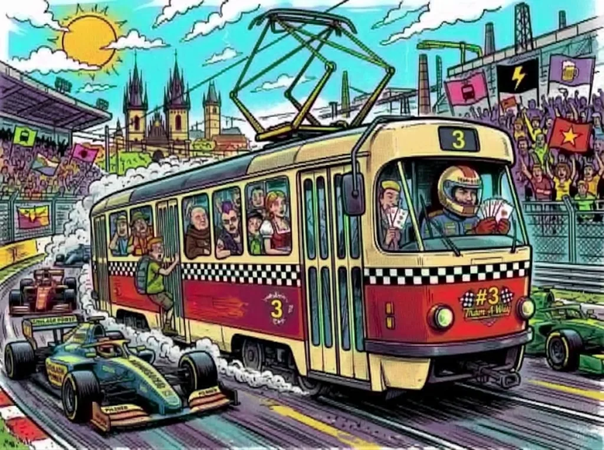

Anglie – Šprým před starostou v Glasgow
Londýn, 1837–1838 · Kramářský tisk · Richard Middleton a jeho balíček karet

Příběh (moderní převyprávění)
Nedělní dopoledne v Glasgow mělo vůni chladného kamene a starého papíru. Když seržant zavelel svému oddílu ze 60. pěšího pluku k nástupu do kostela, ozvala se chrámovou lodí těžká ozvěna okovaných bot. Farář dokončil úvodní modlitbu, otevřel Písmo a zadíval se do lavic. Kolem zašustily stránky – každý, kdo měl u sebe bibli nebo modlitební knížku, ji honem vytáhl, aby si našel čtený text.
Jen řadový voják Richard Middleton zůstal sedět s prázdnýma rukama. Pět dlouhých týdnů byl na pochodu, s minimem zásob a bez jediné knihy. Sáhl tedy hluboko do kapsy kabátu, vytáhl ohmataný balíček hracích karet a jednu po druhé je rozložil před sebe na dřevěnou lavici. Zatímco kazatel hřímal z kazatelny, Richard sklápěl oči od jedné karty ke druhé, tiše a soustředěně, jako by v nich četl to nejhlubší zjevení.
Seržantovi roty tento výjev neunikl. Naklonil se k němu a sykl: „Richarde, schovej ty karty! Tady jsi v kostele, a ne v hospodě!" Voják ani nezvedl hlavu od stolu a klidně odvětil: „Toho si nevšímejte, pane."
Jakmile kázání skončilo a oddíl vyšel na kostelní dvůr k nástupu, přistoupil k němu městský seržant a položil mu ruku na rameno. „Člověče, pojďte se mnou. Okamžitě," oznámil úředním tónem. „Pane," podivil se voják, „čím jsem se provinil, že mě zatýkáte?" „Hrál jste v kostele karty." „Nikoliv, pane," ohradil se Richard, „nehrál jsem karty, jen jsem si je prohlížel." „Na tom nesejde. Půjdete se mnou před pana starostu."
V starostově domě bylo zrovna po obědě. Když pán domu vyšel ze síně a vyslechl hlášení o rouhačském vojákovi, svraštil obočí. „Nuže, vojáku, co máš na svou obhajobu?" zahřměl. „Doufám, pane, že mnoho," odpověděl Richard neohroženě. „Tím lépe pro tebe," odsekl starosta, „neboť jestli ne, stihne tě ten nejhorší trest, jaký kdy člověk zakusil."
Richard předstoupil, vytáhl z kapsy balíček karet, rozprostřel je na starostův stůl a s naprostým klidem začal vyprávět: „Pane, jsem pět týdnů na pochodu, nemám bibli, kalendář ani modlitební knížku – jen tyto karty. Věřím však, že vaši ctihodnost přesvědčím o čistotě svých úmyslů."
Vzápětí se z obyčejného pěšáka stal kazatel: „Když pohlédnu na eso, připomíná mi, že je pouze jeden Bůh. Dvojka mi značí Otce i Syna, trojka pak Otce, Syna i Ducha svatého. Čtyřka mi ukazuje čtyři evangelisty – Matouše, Marka, Lukáše a Jana – a pětka pět moudrých panen, které si připravily své lampy, zatímco pět pošetilých zůstalo přede dveřmi."
Starosta poslouchal bez dechu a voják pokračoval dál: „V šestce vidím šest dní, v nichž Pán stvořil nebe a zemi, a v sedmičce sedmý den, kdy odpočinul a posvětil jej. Osmička mi připomíná osm spravedlivých, kteří se zachránili v arše před potopou – Noema, jeho ženu, tři syny a jejich ženy. Devítka značí devět malomocných, které Spasitel uzdravil, ačkoliv se nevrátili poděkovat. A desítka? Ta mi staví před oči Desatero přikázání, jež Bůh dal Mojžíšovi na hoře Sinaj."
Poté Richard vzal do ruky kluka a beze slova jej odložil stranou. Přešel rovnou ke královně: „Královna mi připomíná královnu ze Sáby, která vážila cestu z nejzazších končin světa, aby slyšela moudrost krále Šalomouna – a také naši královnu Viktorii, za niž se modlím. A král mi připomíná velkého Krále nebes i země, Boha všemohoucího."
V místnosti zavládlo ticho. Starosta si promnul bradu a pousmál se. „Dobrá, podal jsi velmi zdařilý výklad všech karet. Až na jednu, která tu chybí." „Která to je, pane?" zeptal se voják. „Kluk," řekl starosta. „Ó, i o něm mohu vaší ctihodnosti podat dobrý výklad, pokud se nebudete zlobit." „Nebudu, pokud za toho darebáka neoznačíš mě," odvětil starosta se smíchem.
Richard pohlédl úkosem na strážce pořádku u dveří a pronesl: „Nuže, největší darebák, kterého znám, je městský seržant, jenž mě sem přivedl."
Starosta se rozesmál na celé kolo: „Nevím, zda je největším darebákem, ale jsem si jist, že je tím největším hlupákem!"
Aby své vítězství dovršil, dokázal voják starostovi, že karty mu slouží i jako věčný kalendář: spočítal 365 ok pro každý den v roce (drobnou početní nepřesnost hbitě omluvil tím, že ani tištěné kalendáře nebývají bez chyby), 52 karet pro týdny v roce a 13 zdvihů pro třináct lunárních měsíců.
Ohromený starosta nakonec zavolal sloužící, nechal přinést bochník chleba, kus sýra a džbán dobrého piva, vtiskl Richardovi do dlaně minci a propustil ho se slovy, že chytřejšího muže v životě neviděl. Právě takto – s vtipem prostého muže, který přelstil mocné tohoto světa – se zrodil příběh, jenž se v londýnských tiskařských dílnách proměnil v nesmrtelnou kramářskou píseň.
Historický pramen: Anglický tisk (1837–1838)

📜 Zobrazit přepis anglického originálu (1837–1838)
THE PERPETUAL ALMANACK; OR, GENTLEMAN SOLDIER'S PRAYER BOOK
The serjeant commanded his party to the church, and when the parson had ended prayer, he took his text; and all of them that had a Bible, pulled it out to find the text; but this soldier had neither Bible, Almanack, nor Common Prayer Book, but he put his hand in his pocket and pulled out a pack of Cards, and spread them before him as he sat, and while the parson was preaching he first kept looking at one card and then at another. The serjeant of the company saw him, and said, "Richard, put up your cards; for this is no place for them." — "Never mind that," said the soldier, "for you have no business with me here."
When the parson had ended his sermon, and all was over, the soldiers repaired to the church-yard and the commanding officer gave the word of command to fall in, which they did. The serjeant of the city came and took the man prisoner. — "Man, you are my prisoner," said he. — "Sir," said the soldier, "what have I done that I am your prisoner?" — "You have play'd a game of cards in the church." — "No," said the soldier, "I have not play'd a game, for I only look'd at a pack." — "No matter for that, you are my prisoner." — "Where must we go?" said the soldier. — "You must go before the mayor," said the serjeant.
So he took him before the mayor; and when they came to the mayor's house, he was sat at dinner. When he had dined, he came to them, and said — "Well serjeant, what do you want with me?" — "I have brought a soldier before your honour for playing at cards in the church." — "What! that soldier!" — "Yes." — "Well soldier, what have you to say for yourself?" — "Much, sir, I hope." — "Well and good, but if you have not, you shall be punished the worst that ever man was." — "Sir," said the soldier, "I have been five weeks upon the march, and have but little to subsist on, and am without either Bible, Almanack, or Common Prayer Book, or any thing but a pack of cards. I hope to satisfy your honour of the purity of my intention."
Then the soldier pulled out of his pocket the pack of cards, which he spread before the mayor, and then began with the ace.
"When I see the ace," said he, "it puts me in mind, that there is one God only; when I see the deuce, it puts me in mind of the Father and the Son; when I see the trey, it puts me in mind of the Father, Son, and Holy Ghost; when I see the four, it puts me in mind of the four Evangelists that preached the gospel, viz. Matthew, Mark, Luke, and John; when I see the five, it puts me in mind of the five wise virgins that trimmed their lamps; there were ten, but five were foolish, who were shut out; when I see the six, it puts me in mind that in six days the Lord made Heaven and Earth; when I see the seven, it puts me in mind that the seventh day God rested from all the works which he had created and made, wherefore the Lord blessed the seventh day and hallowed it; when I see the eight, it puts me in mind of the eight righteous persons that were saved when God drowned the world, viz. Noah, his wife, three sons, and their wives; when I see the nine, it puts me in mind of nine lepers that were cleansed by our Saviour; there were ten, but nine never returned God thanks; when I see the ten, it puts me in mind of the ten commandments that God gave Moses on Mount Sinai, on the two tables of stone."
He took the knave and laid it aside.
"When I see the queen, it puts me in mind of the queen of Sheba, who came from the furthermost parts of the world to hear the wisdom of King Solomon, and who was as wise a woman as he was a man; for she brought fifty boys and fifty girls, all clothed in boys' apparel, to show before King Solomon, for him to tell which were boys and which were girls; but he could not until he called for water for them to wash themselves; the girls washed up to their elbows and the boys only up to their wrists, so King Solomon told by that. And also of Queen Victoria, to pray for her. And when I see the King, it puts me in mind of the great King of Heaven and Earth, which is God Almighty."
"Well," said the mayor, "you have given a very good description of all the cards, except one, which is lacking." — "Which is that?" said the soldier. — "The knave," said the mayor. — "Oh, I can give your honour a good description of that, if your honour won't be angry." — "No, I will not," says the mayor, "if you will not term me the knave." — "Well," said the soldier, "the greatest that I know of is the serjeant of the city that brought me here." — "I don't know," said the mayor, "that he is the greatest knave, but I am sure he is the greatest fool."
"I shall now show your honour how I use the cards as an Almanack." — "You certainly are a clever fellow," said the mayor, "but I think you'll have a hard matter to make that appear." — "When I count how many spots there are in a pack of cards, I find there are three hundred and sixty-five, there are so many days in the year." — "Stop," said the mayor, "that's a mistake." — "I grant it," said the soldier, "but as I have never yet seen an almanack that was thoroughly correct in all points, it would have been impossible for me to imitate an almanack exactly without a mistake." — "Your observations are very correct," said the mayor; "go on." — "When I count how many cards there are in a pack, I find there are fifty-two, there are so many weeks in the year; when I count how many tricks there are in a pack, I find there are thirteen, there are so many months in a year. You see, sir, that this Pack of cards is a Bible, Almanack, Common Prayer Book, and Pack of Cards to me."
Then the mayor called for a loaf of bread, a piece of cheese, and a pot of good beer, and gave to the soldier a piece of money, bidding him to go about his business, saying, he was the cleverest man he had ever seen.
Zdroj: The perpetual almanack, or, Gentleman soldier's prayer book [online]. [London]: J. Catnach, [1837–1838]. Yale University Library.
Spojovačka – Duchovní a biblický význam karet
Klikni na kartu v levém sloupci a poté na její správný biblický význam v pravém sloupci (nebo naopak). Správný pár zezelená a zamkne se, chybný krátce blikne červeně.
Odemkni starostův zámek – Kalendářní šifra
Zadej správná tři čísla z příběhu a osvoboď vojáka z vazby. Čísla můžeš vepsat přímo z klávesnice nebo měnit tlačítky ▲ a ▼. Nápověda: počty ok, karet a zdvihů v balíčku.
Německo – Vážný katechismus pod hrozbou trestu
Vídeň, 1821 · Österreichische Nationalbibliothek · Anonymní pěšák habsburské armády

Příběh (moderní převyprávění)
Nedělní dopoledne se neslo v duchu mše svaté. Když pluk napochodoval na slavnostní bohoslužbu, usadil se jeden obyčejný pěšák do zadní lavice a namísto modlitební knížky vytáhl z kapsy balíček francouzských karet. Rozložil je před sebe na dřevo a pohroužil se do nich.
Šikovatel a pobočník, kteří stáli opodál, na něj okamžitě upřeli zrak. Šikovatel mu sykl, ať ty karty okamžitě schová a nedělá v chrámu ostudu. Voják však neposlechl. S upřeným pohledem si prohlížel jeden list za druhým až do samého konce mše.
Jakmile kněz udělil požehnání, vojáka na místě zatkli a tři muži ho eskortovali k panu majorovi. V hlášení stál jasný verdikt: opovážlivý hříšník, který v domě Božím znesvětil mši hraním karet. Major při výslechu rudl vzteky.
„Jak se vůbec opovažuješ v kostele hrát karty?!" zahřměl. „Jestli se z toho řádně nevymluvíš, zítra poběžíš uličkou!"
„Pokud dovolíte, pane majore, dokážu své jednání obhájit," odvětil voják klidně.
„Svatyni Boží jsem neznesvětil a nikoho jsem nerušil," začal svou obhajobu, načež mu major netrpělivě pokynul, ať tedy mluví k věci, jinak zná svůj trest. Voják vytáhl balíček na stůl a z prostého pěšáka se rázem stal kazatel.
„Když pohlédnu na eso, vidím jediného Boha, který stvořil nebe i zemi," spustil vyrovnaným hlasem. „Dvojka mi připomíná dvě přirozenosti v Kristu – božskou i lidskou – a trojka tři božské osoby v jedné podstatě. Ve čtyřce spatřuji čtyři evangelisty a v pětce uctívám pět svatých ran Kristových."
Major si ho překvapeně měřil a voják plynule pokračoval dál: „Šestka mi staví před oči šest dní stvoření světa z ničeho a sedmička den odpočinku, jejž Bůh posvětil. V osmičce si vybavuji osm blahoslavenství z Kázání na hoře, v devítce devět kůrů andělských a v desítce Desatero přikázání, které Mojžíš přijal na hoře Sinaj za blesků a hromobití."
V tu chvíli vzal do ruky křížového kluka a beze slova ho odložil stranou. „Tento list není čestný, ale ostatní tři kluci jsou Pilátovi biřici, kteří ukřižovali Spasitele," vysvětlil a přešel ke královským kartám. „Ve čtyřech dámách uctívám Pannu Marii se třemi svatými ženami pod křížem a ve čtyřech králích svaté Tři krále s Kristem, Králem všech králů."
Nezapomněl ani na samotné symboly: kříže mu připomínaly Kristův kříž, piky trnovou korunu a hřeby v rukou i nohou, kára šíření evangelia do všech čtyř stran světa a srdce samotnou lásku Kristovu, na níž stojí církev.
„A mimo to, pane majore, v nich nacházím 365 ok jako dní v roce, 52 listů jako týdnů a 12 figur jako dvanáct měsíců," uzavřel svou řeč. „Mohu vás ujistit, že tyto karty jsou mi stejně užitečnou a povznášející modlitební knížkou jako kterákoli jiná."
V místnosti zavládlo ticho. Major si promnul knír a ukázal na odloženou kartu na kraji stolu: „A co tedy znamená ten křížový kluk, kterého jsi dal stranou?"
Voják se ani nehnul a pohotově odvětil: „To je ten čtverák, který mě sem přivedl a obžaloval. A ti tři zbývající kluci jsou strážní, kteří mě hlídali ve vazbě."
V tu ránu napětí povolilo a majorovi se rozjasnila tvář. „Výborně, můj synu, obhájil ses skvěle!" prohlásil s uznáním. „Jsi propuštěn z vazby a tady máš ještě zlatý na dobrou sklenici vína."
Historický pramen: Německý tisk (1821)

📜 Zobrazit přepis německého originálu (1821)
Auslegung der französischen Karten, welche ein gemeiner Soldat in der Kirche anstatt des Gebethbuches gebrauchet...
Ein Regiment Soldaten machte an einem Sonntage eine Kirchenparade, unter diesen Soldaten setzte sich einer in der Kirche nieder, und anstatt des Gebethbuches zog er ein Spiel Karten heraus, legte es vor seiner nieder; der Adjutant und Feldwebel aber, die da stunden, sahen ihm zu, was er damit machen wird; alsdann befahl ihm der Feldwebel die Karten einzustecken, und solches hinführo zu unterlassen; der Soldat gehorchte aber keineswegs, sondern betrachtet mit innigster Rührung jede Karte bis zu Ende der Messe; da nun der Gottesdienst vollendet war, wurde der Kartenspieler sogleich in Arrest genommen, und in dem Rapport als ein verwegener Mensch, der wider die Ehre Gottes gehandelt habe, dem Herrn Major geschildert.
Da nun das Verhör über den Spieler gehalten wurde, sprach der Major in vollem Zorn zu ihm: wie kannst du dich unterstehen, in der Kirche zu spielen, wofern du dich also nicht gut verantworten wirst, so ist Morgen das Gassenlaufen dein Lohn. Ja antwortete der Soldat, wenn es erlaubt ist, so werde ich mich gut zu verantworten wissen.
Er fieng also an, und sprach: der Ort wo ich war, ist das Heiligthum Gottes, ich habe alle Leute mit Ruhe gelassen. Gut sprach der Major, verantworte dich besser, du weißt deinen Lohn; der Soldat zog also seine Karten heraus, und fieng nachfolgende Auslegung darüber zu machen:
Erstens sagte er, wenn ich den Einser sehe, das zeigt mir, daß ein Gott sey, der Himmel und Erde erschaffen hat. Der Zweyer zeigt mir, daß zwey Naturen in Christo sind, die göttliche und menschliche. Ein Dreyer zeigt mir, daß drey göttliche Personen in einer Wesenheit gegenwärtig sind. Der Vierer zeigt mir, die vier heiligen Evangelisten. Bey dem Fünfer verehre ich die heiligen 5 Wunden Christi. Bey dem Sechser betrachte ich, wie Gott die Welt sammt dem Menschen in 6 Tagen erschaffen, und aus Nichts gemacht hat. Bey dem Siebner betrachte ich, wie Gott am siebenten Tag geruhet, und diesen Tag zu seiner Ehre und Dienst geheiliget hat. Bey dem Achter erwecke ich die acht Seligkeiten, welche Christus auf dem Berg gelehret, und dem Menschen, der solche ausübt, selig gesprochen hat. Bey dem Neuner verehre ich die 9 Chöre der Engeln. Bey dem Zehner betrachte ich die zehn Gebote Gottes, welche Gott dem Moyses auf dem Berg Sinai unter Blitz und Donner gegeben hat.
Wie nun der Soldat diese Karten durchgangen hat, nahm er den Kreuzbauer, legte ihn auf die Seite, und sagte: dieses Blat ist nicht ehrlich, die andern drey Bauern sind aber die Henkersknechte Pilati, welche Christum gekreuziget haben.
Bey den vier Damen verehre ich die 3 heiligen Frauen samt Maria der Mutter Gottes, welche bey dem Kreuz Christi gestanden sind. Bey den vier Königen verehre ich die heiligen 3 Könige mit Christo dem König aller Könige, welchem sie Opfer dargebracht haben.
Weiter sprach der Soldat: die Kreuz-Karten stellen mir vor das Kreuz Christi. Bey Pick betrachte ich die dörnerne Kron welche Christo auf sein heiligstes Haupt gedruckt worden; wie auch die Nägel, welche ihm durch seine heilige Hände und Füsse sind geschlagen worden. Bey den vier Ecken in Karo betrachte ich, wie das heilige Evangelium in allen vier Theilen der Welt ist geprediget worden, und Christus der oberste Eckstein ist. Bey die Herz betrachte ich die Liebe Christi, mit welcher er die Kirche erbauet hat.
Uiber dieses so finde ich in den Karten 365 Augen, die zeigen mir 365 Tage im Jahr; die 52 Kartenbriefe bedeuten 52 Wochen des Jahrs; die 12 Figuren stellen mir aber die 12 Monate des Jahres vor, und ich sage und kann versichern, daß mir die Karten eben so gut gefallen, erbaulich und nützlich sind, als manches Gebethbuch.
Darauf fragte der Herr Major, was der Kreuzbub zu bedeuten hätte, den er auf die Seite gelegt hat, da antwortete der Soldat, das ist der Stwerack, der mich zum Herrn Major geführet und angeklagt hat, und die drey übrigen Bauern sind diese, welche bey mir Schildwacht gestanden sind, als ich im Arreste war.
Hierauf sagte der Herr Major: brav mein Sohn, du hast dich gut verantwortet, du bist deines Arrestes entlassen, hier hast du noch einen Gulden auf ein gutes Glas Wein.
Zdroj: Auslegung der französischen Karten... [online]. 1821. Österreichische Nationalbibliothek, sign. 234069-A.
Zajímavost: Proč jsou v německém textu karty „francouzské"?
Výraz „francouzské karty" (französische Karten) v německém a středoevropském prostředí sloužil k odlišení typu karetního balíčku:
- Francouzský vs. německý list: Ve střední Evropě se tradičně hrálo s tzv. německými (jednohlavými) kartami – 32 nebo 36 listů, barvy: žaludy, listy, srdce, kule. Figury: spodek, svršek, král, eso.
- Potřeba 52 karet: Pro vyprávění tohoto příběhu voják nezbytně potřebuje 52 karet (52 týdnů v roce) a hodnoty od esa po desítku, včetně dámy. Tuto strukturu mají francouzské karty (srdce, kára, piky, kříže), které se v 18. a 19. století běžně používaly v armádě.

(32 listů: žaludy, listy, srdce, kule)

(52 listů: piky, srdce, kára, kříže)
Srovnání: Co se změnilo při cestě z Anglie do střední Evropy?
| Oblast srovnání | Anglický originál (18. stol.) | Německý tisk (1821) |
|---|---|---|
| Konfesijní vyznění | Protestantské (anglikánské): Důraz na Bibli a evangelijní podobenství (5 moudrých panen, Noemova archa, 9 malomocných, královna ze Sáby). | Katolické: Důraz na Kristovo utrpení, kulty svatých a mariánskou úctu (5 ran Kristových, 9 kůrů andělských, Panna Maria pod křížem, Tři králové). |
| Prostředí a postavy | Civilní i vojenské: Konkrétní voják Richard Middleton v Glasgow je souzen civilním starostou (Mayor). | Čistě vojenské (habsburské): Anonymní voják je zatčen šikovatelem (Feldwebel) se stráží a souzen vojenským velitelem (panem majorem). |
| Hrozba trestu | Neurčitý, ale „nejhorší trest, jaký kdy člověk zakusil". | Konkrétní vojenský trest – běh uličkou (Gassenlaufen). |
| Výklad karetních barev | V anglickém textu chybí – vykládají se pouze hodnoty a figury. | Nově přidáno: Kříže = Kristův kříž, piky = trnová koruna a hřeby, kára = 4 světadíly, srdce = láska Kristova. |
| Pojetí kluků (spodků) | Zmiňuje se pouze jeden odložený kluk (knave) jako označení pro městského seržanta. | Vykládají se všichni čtyři kluci: křížový kluk je udavač/čtverák (Stwerack), ostatní tři jsou Pilátovi biřici a strážní u vazby. |
| Počet měsíců v roce | 13 zdvihů (tricks) odpovídá 13 lunárním měsícům; nechybí vtipná poznámka o nepřesnosti kalendářů. | 12 figur (Figuren) odpovídá 12 kalendářním měsícům; matematická hříčka o chybě v kalendáři mizí. |
| Odměna na závěr | Chléb, sýr, džbán piva a peníze od starosty. | Propuštění z vazby a jeden zlatý (Gulden) od majora na sklenici dobrého vína. |
Shrnutí (Kulturní a jazykový transfer): Zatímco anglický text má blíže k lidové anekdotě a šprýmu, německá verze z roku 1821 text zvážněla a zkatolizovala. Z vtipného glosátora se stává zbožný katolický voják a celá scéna se odehrává uvnitř přísné vojenské hierarchie. Zároveň se v textu objevuje regionální jazykový otisk – bohemismus „Stwerack" (čtverák), který dokazuje pohyb textu mezi německy a česky mluvícím prostředím.
Třídicí kvíz – Anglická vs. Německá verze
Rozřaď všech 8 kartiček ze zásobníku do správného sloupce. Můžeš kliknout na kartičku a pak na sloupec, nebo ji přetáhnout (Drag & Drop). Kliknutím na zařazenou kartičku ji vrátíš zpět. Poté stiskni „Zkontrolovat zařazení“.
Česko – Rukopis z Dašic a švejkovská pointa
Dašice, kolem roku 1850 · Písmák Johan Trnka · Muzejní spolek Dašice

Dobový přepis rukopisu Johana Trnky
Když jedenkráte pluk v kostele na parádě byl, jeden voják namísto modlení vytáhl sobě karty a rozložil je před sebe. Felbébla adjutant poručil mu karty schovat a aby toho hned zanechal. Však ale voják uposlechnout nechtěl, nýbrž rozložil sobě ty karty veskrz. Když služby Boží skončeny byly, postavil se felbébl u dveří, aby vojáka arestýroval a pak panu majorovi představil. Když tedy raport držený byl, přes jeho opovážlivost při službách Božích, pravil k němu pan major s největší horlivostí: Jak ty se můžeš opovážit v kostele v karty hrát? Jestli se mně z toho nezodpovídáš, tak jest tobě zejtra ulice otevřená. Odpověděl voják: Já mám příčiny dost. Jestli mně bude dovoleno, tak se dobře zodpovídám. I začal vypravovat:
Místo, kde služby Boží se konaly, nechal jsem všecky lidi s pokojem. Dobře, pravil pan major, jen mluv dále, nebo už víš tvůj trest, co na tebe očekává. Voják tedy vytáhl karty a činil následující výklad: Předně, když já jednotku dostanu, ta mě ukazuje, že jest jeden Bůh, který nebe i země stvořil. Dvojka ta mně ukazuje dvojí podstatu bytnosti Kristovou, totiž Božství a Člověčenství. Trojka tři božské osoby. Při čtverce čtyry Evangelisty Páně, při pětce nejsvětějších pět ran p. Krista. Při šestce kterak Bůh v šesti dnech člověka a svět stvořil, při sedmi rozjímám, kterak Bůh sedmý den od práce ustanovil a den ke své modlitbě posvětil. Při osmi rozjímám osmero blahoslavenství, kterak Kristus na hoře Kalvárii člověka blaženým učinil, při devět rozjímám a ctím devět kůrů andělských, při deset rozjímám desatero Božích přikázání, které Bůh Mojžíšovi na hoře Sinaj pod bleskem a hromobitím odevzdal.
Když voják všecky ty karty přehlížel, vzal křížového schorka, odložil ho na stranu a pravil: Tento list nejní poctivý a ostatní tři schorkové jsou katové Pilátovi, kteří Krista ukřižovali. Při těch dámách ctím svatý mateřiny a matky Boží, která pod křížem stála. Při těch králích ctím svatý tři králové s Kristem všech králův, kteří pána Krista obětovali, a všecky vyobrazují mně kříž Kristův. Při barvách čtyrech rozjímám, kterak evangelium Kristovo ve všech čtyřech dílech světa hlásáno bylo, při těch rozjímám si lásku Kristovu, kterak on církev svatou tak výborně zřídil. Nadevšecko nacházím v kartách dní v roku 365, 52 listů to mě ukazuje 52 neděl, 12 figur to mě ukazuje 12 měsíců. Jak se mně ty karty líbějí, jako nějaké knížky k modlení. Pan major pravil k němu: Copak ten křížový schorek znamená? Odpověděl voják: To je ten, co mě předvedl k panu majorovi, ostatní tři schorkové co u mě vartu stáli, když jsem byl v arestu. Nato pravil pan major: Bravo, můj synu, ty jsi se dobře zodpovídal, ty jsi tvého arestu zbaven. Tu máš na dobrou sklenici vína.
To si můžete, bratři, pomyslit, že to byla velká práce, když jsem se chtěl dobře zodpovídat, bych trestu ušel!
Zdroj: TRNKA, Johan. Příběh o kartách v kostele a opisy písní [rukopis, kolem r. 1850]. In: Karty v kostele [online]. Dašice: Muzejní spolek Dašice, 2011.

Jazykový detektor – Germanismy v rukopisu Johana Trnky
V úryvku z Trnkova zápisu (1850) najdi a kliknutím označ všechna 4 dobová slova přejatá z němčiny (germanismy), která prozrazují vojenskou realitu habsburské armády. Slova nejsou předem vyznačena – hledej pozorně v textu! Po kliknutí na správné slovo se objeví zelené zvýraznění a podrobné vysvětlení.
Nalezeno germanismů: 0 / 4
„Felbébla adjutant poručil mu karty schovat... postavil se felbébl u dveří, aby vojáka arestýroval... vzal křížového schorka, odložil ho na stranu... ostatní tři schorkové co u mě vartu stáli.“
Od amerického country k české punkové parodii
T. Texas Tyler (1948) · Miroslav Černý (1969) · Tři sestry (90. léta)
Příběh nezanikl ani ve 20. století. V roce 1948 jej proslavil americký country zpěvák T. Texas Tyler v recitované baladě The Deck of Cards. V roce 1969 ji do češtiny převedl Miroslav Černý (Balíček karet) a v 90. letech z ní skupina Tři sestry udělala legendární recesistickou parodii Tramvaj.

1. T. Texas Tyler – Deck of Cards (1948)
T. Texas Tyler – The Deck of Cards (americký originál z roku 1948)
2. Miroslav Černý – Balíček karet (1969)
Miroslav Černý – Balíček karet (česká verze z roku 1969)
📜 Zobrazit celý text písně Balíček karet (Miroslav Černý, 1969)
Povím vám příběh z války, který mi vyprávěl T. Texas Taylor.
Jeho hrdinou je voják a balíček karet.
Bylo to skoro na konci války.
Po mnoha bojích, vítězstvích i nezdarech se dostala hrstka vojáků konečně do města,
které leželo u hranic a kde byl také vojenský tábor.
Druhý den byla neděle, a tak hned ráno někteří chlapci odešli do kostela.
Přišli pozdě, kázání už začalo.
Vojáci proto rychle vyhledali volná místa, usedli a vyndali modlitební knížky.
Všichni, až na jednoho.
Ten vytáhl z kapsy karty a začal je před sebou, na stole, rozkládat jednu vedle druhé.
Seržant, který vojáky do kostela přivedl, to spatřil a tak, když se vrátili,
přivedl vojáka k veliteli.
Proč jste přivedl toho vojáka, seržante?
Hrál v kostele karty, pane.
Velitel se udiveně obrátil na vojáka.
Můžeš mi to nějak vysvětlit?
Zajisté, pane.
Doufám, protože jinak bych tě musel přísně potrestat.
Nuže, pane, víte, byl jsem celý rok v první linii
a s sebou jsem neměl nic než tenhle balíček karet.
Věřím však, že vás uspokojím čistotou svých myšlenek stejně,
jako tyto karty uspokojily moji touhu po slově Božím.
A s těmito slovy začal voják své vyprávění.
Podívám-li se na eso, vzpomenu, že nad námi v nebi je jen jediný Bůh.
Dvojka mi připomene, že bible má dvě části –
Starý a Nový zákon. A trojka pak trojici Boží.
Čtyřka, to jsou Marek, Matouš, Lukáš a Jan, evangelisté, kteří hlásali víru svatou.
S pětkou vzpomenu na pět pannen, které vyčistily lampy své.
Bylo jich vlastně deset, ale jen pět bylo moudrých a ty byly spaseny.
Šestka znamená, že za šest dní stvořil Bůh tuto zem
a sedmička den, kdy odpočíval po své práci.
Vidím-li osmičku, vzpomenu na osum lidí, které Bůh zachránil,
když seslal potopu na tuto zem.
Byli to Noe a jeho žena, jejich tři synové a jejich manželky.
Devítka mi připomene malomocné, které Bůh očistil.
I těch bylo deset, ale devět z nich Bohu ani nepoděkovalo.
Desítka, ta má stejně bodů jako přikázání, která Bůh seslal Mojžíšovi a jeho lidu,
přikázání, kterými se všichni řídíme, nebo která aspoň se snažíme plnit.
Král mi připomene znovu jediného pána nebes,
královna blahoslavenou Pannu Marii
a spodek, pane, spodek, to je ďábel.
Sečtu-li body na všech kartách, dojdu k číslu 365,
stejně, jako když sečtu všechny dny do roka.
Je tu 52 karet – jako do roka týdnů,
13 štychů – jako týdnů za čtvrt roku,
12 obrázkových karet – jako měsíců v roce
a čtyři barvy – stejně jako jaro, léto, podzim a zima.
Jak vidíte, pane, můj balíček karet mi posloužil stejně
jako bible, modlitební knížka i kalendář.
A přátelé, tento příběh je pravdivý.
Ten voják se totiž jmenoval T. Texas Taylor.
3. Tři sestry – Tramvaj (parodie)

Tři sestry – Tramvaj (punková parodie)
📜 Zobrazit celý text písně Tramvaj (Tři sestry, parodie)
Stalo se to během posledního závodu Formule 1, který se konal v Burkině Faso na autodromu Benin, na něm se mělo rozhodnout, kdo bude celkovým vítězem mistrovství. Piloti už se řadili na startu, když tu si inspektor závodu všiml, že ve druhé řadě stojí tramvaj. Chvíli váhal, zda má dát pokyn k odstartování, ale nakonec mávnul šachovnicovým praporkem. Když se těsně po startu podíval do záznamníku, zjistil, že tramvaj řídí D. Taxis Tramway, favorit závodu a koneckonců i celého mistrovství. Když závod skončil, bylo jasné, že mistrem světa se stal Emerson Aldi, Tramway totiž dojel až třetí a ztratil tak naprosto šanci stát se celkovým vítězem. Na párty, jež se konala bezprostředně po ukončení závodu to inspektorovi nedalo, přitočil se se sklenkou šampaňského k vyrovnanému Tramwayovi a zeptal se ho: Chlapče, proč si vlastně nechtěl vyhrát?
Tramway se zamyslel, omočil rty ve spritu a pak pomalu do rozjásaného davu řekl:
Víte pane, jezdím Formuli 1 již řadu let, ale až před touto grand prix jsem dostal strach. Bál jsem se o svůj život, a proto jsem jel raději tramvají. Ta tramvaj je totiž něco jako kronika mého života.
Jářku ta tramvaj má dva vozy – přesně tolik žen jsem v životě opravdu miloval.
Stejně tak má osm náprav, to je jako osm let, které jsem prožil s každou z žen, které jsem miloval.
Šestnáct kol to je šestnáct let, nebo také dva krát osm, což jest doba po kterou jsem žil s ženami jež jsem miloval. Zároveň je to i věk mého jediného syna. Šestnáctkrát se rovněž otočilo kolo letokruhu jaro, podzim, léto, zima a letokruh má tolik měsíců, kolik tramvaj schodů – bez šesti.
Když vydělím počet míst k stání s číslem mojí tramvaje – 3, tak vyjde můj věk a třetina roku, jestliže však od tohoto čísla odečtu věk mého syna, zjistím kolikrát tramvaj zacinká mezi Braníkem a Palmovkou.
Vynásobím-li počet vozoven a počet jízd, které udělá tramvaják za šichtu, zjistím kolik dní jsem nespravedlivě seděl za mřížemi a když potom odečtu počet dveří, budu vědět kolikrát jsem byl nevěrný dvěma vozům, které jsem miloval.
Víte pane, stejně tak jako Formule 1, i tramvaj má jednoho řidiče. Ten pro mne může znamenat krále, šaška, boha, nebo dvě ženy které jsem opravdu miloval. Či snad i mého syna. Ale víte pane, řidičem budu vždy já. D. Taxis Tramway.
Srovnávací přiřazovačka – „Kdo se skrývá za kartou?“
Přiřaď všech 12 kartiček ze zásobníku do 12 prázdných políček tabulky (4 karty × 3 verze). Můžeš kliknout na kartičku a pak na prázdné políčko, nebo kartičku přetáhnout myší (Drag & Drop). Kliknutím na políčko vrátíš kartičku zpět do zásobníku. Poté stiskni tlačítko pro vyhodnocení.
| Prvek / Karta | 1. Rukopis J. Trnky (1850) | 2. M. Černý – Balíček karet (1969) | 3. Tři sestry – Tramvaj (parodie) |
|---|---|---|---|
| Dvojka (2) | Vlož kartičku | Vlož kartičku | Vlož kartičku |
| Královna (Dáma) | Vlož kartičku | Vlož kartičku | Vlož kartičku |
| Kluk / Spodek | Vlož kartičku | Vlož kartičku | Vlož kartičku |
| Závěrečná pointa | Vlož kartičku | Vlož kartičku | Vlož kartičku |
Závěrečný analytický kvíz
Vyber odpověď (A, B nebo C) u každé ze 3 otázek a poté klikni na tlačítko „Vyhodnotit kvíz“. Zobrazí se správné odpovědi, podrobné vysvětlení a celkové skóre.
🃏 Výsledek kvízu
Závěrečný raport: Verdikt pana majora
Předstup před velitele posádky k hlášení. Zde se sčítají tvé zásluhy ze všech 6 zkoušek a kapitol (celkem 43 bodů = 100 %).
Přehled jednotlivých úkolů (kliknutím na úkol se k němu vrátíš):